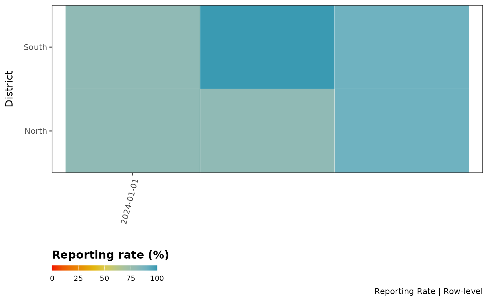
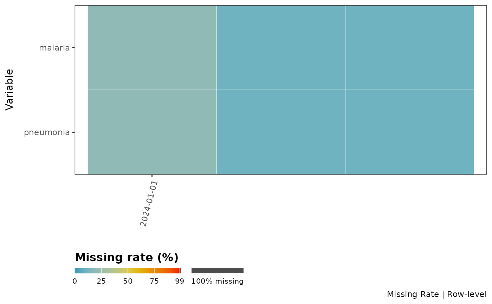
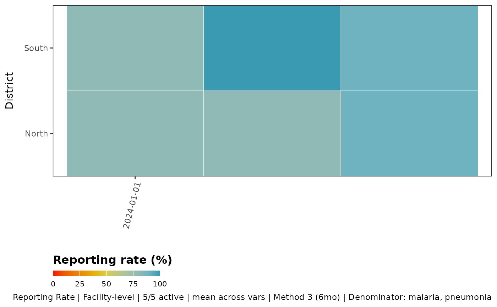
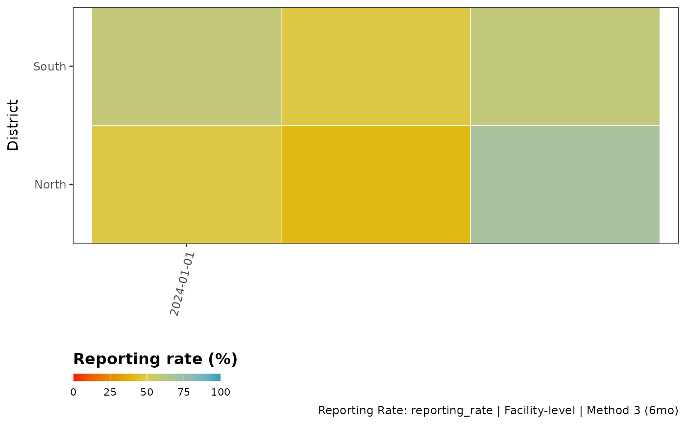

This function visualizes the proportion of missing data or reporting rate for specified variables in a dataset. It creates a tile plot where the x-axis can represent any categorical time such as time (e.g., year, month). The function can handle three different scenarios:
District-level analysis with specified variables
Variable-level analysis without district grouping
Facility-level analysis
Usage
reporting_rate_plot(
data,
x_var,
y_var = NULL,
vars_of_interest = NULL,
hf_col = NULL,
reprate_col = NULL,
key_indicators = c("allout", "conf", "test", "treat", "pres"),
method = 3,
nonreport_window = 6,
reporting_rule = "any_non_na",
require_all = FALSE,
use_reprate = TRUE,
full_range = TRUE,
weighting = FALSE,
weight_var = NULL,
weight_window = 12,
exclude_current_x = TRUE,
cold_start = "median_within_y",
target_language = "en",
source_language = "en",
lang_cache_path = tempdir(),
plot_path = NULL,
compress_image = FALSE,
image_overwrite = TRUE,
compression_speed = 1,
compression_verbose = TRUE,
plot_scale = 1,
plot_width = NULL,
plot_height = NULL,
plot_dpi = 300,
show_plot = TRUE,
include_plot_title = FALSE,
y_axis_label = NULL,
x_axis_breaks = 6,
...
)Arguments
- data
A data frame containing the data to be visualized
- x_var
A character string specifying the time variable in 'data' (e.g., "year", "month"). Must be provided.
- y_var
Optional grouping variable name (if any)
- vars_of_interest
An optional character vector specifying the variables to be visualized in 'data'. If NULL, all variables except 'x_var' and 'y_var' will be used.
- hf_col
Character. Optional (defaults to NULL). Name of the column containing unique health facility IDs. When provided with key_indicators, enables facility-level analysis and proper exclusion of inactive facilities from denominators, resulting in more accurate missing rates.
- reprate_col
Character. Optional (defaults to NULL). Name of a column containing pre-calculated facility-level reporting rates. When provided, the function aggregates this column by x_var (and y_var if specified) instead of calculating reporting rates from raw indicators. The column should contain numeric values in decimal (0-1) or percentage (0-100) format. When using this parameter, vars_of_interest and calculation-related parameters (key_indicators, method, nonreport_window, reporting_rule, require_all, weighting, etc.) are ignored. The hf_col parameter can still be used for counting facilities.
- key_indicators
Optional. Character vector of indicators used to define facility activity in scenario 1. Defaults to
c("allout", "conf", "test", "treat", "pres").- method
Character or numeric. Classification method for facility activity status. Can be numeric (1, 2, 3) or character ("method1", "method2", "method3"). Defaults to 3. See
classify_facility_activityfor details.- nonreport_window
Integer. Minimum number of consecutive non-reporting months to classify a facility as inactive in method 3. Defaults to 6.
- reporting_rule
Character. Defines what counts as reporting:
"any_non_na"(default, counts NA as non-reporting, 0 counts as reported) or"positive_only"(requires >0 value to count as reported).- require_all
Logical. When TRUE and multiple vars_of_interest are provided, calculates the proportion of facilities reporting ALL variables (complete data). When FALSE (default), calculates per-variable reporting rates. Only applies to facility-level analysis (when hf_col is provided).
- use_reprate
A logical value. If TRUE, the reporting rate is visualized; otherwise, the proportion of missing data is visualized. Defaults to TRUE
- full_range
A logical value. If TRUE, the fill scale will use the full range from 0 to 100. If FALSE, the fill scale will use the range of values present in the data. Defaults to TRUE.
- weighting
Logical. If TRUE, calculate weighted reporting rates based on facility size. Defaults to FALSE.
- weight_var
Character. Column name containing the weight variable (e.g., "allout" for outpatient volume). Required if weighting = TRUE.
- weight_window
Integer. Number of periods for rolling weight calculation. Defaults to 12.
- exclude_current_x
Logical. If TRUE, exclude current period from weight calculation. Defaults to TRUE.
- cold_start
Character. Method for handling initial periods: "median_within_y" (default) or "median_global".
- target_language
A character string specifying the language for plot labels. Defaults to "en" (English). Use ISO 639-1 language codes.
- source_language
Source language code. If NULL, auto-detection is used. Defaults to NULL.
- lang_cache_path
Path to directory for storing translation cache. Defaults to tempdir().
- plot_path
A character string specifying the path where the plot should be saved. If NULL (default), plot is not saved.
- compress_image
Logical. If TRUE, will compress the saved plot. Defaults to FALSE
- image_overwrite
Logical. If TRUE, will overwrite existing files. Defaults to TRUE.
- compression_speed
Integer. Speed/quality trade-off from 1 (brute-force) to 10 (fastest). Default is 1.
- compression_verbose
Logical. Controls output verbosity. FALSE = silent, TRUE = verbose. Defaults to TRUE.
- plot_scale
Numeric. Scaling factor for saved plots. Values > 1 increase size, < 1 decrease size. Default is 1.
- plot_width
Numeric. Width of saved plot in inches. If NULL (default), width is calculated automatically based on data.
- plot_height
Numeric. Height of saved plot in inches. If NULL (default), height is calculated automatically based on data.
- plot_dpi
Numeric. Resolution of saved plot in dots per inch. Default is 300.
- show_plot
Logical. If FALSE, the plot is returned invisibly (not displayed). Useful when only saving plots. Default is TRUE.
- include_plot_title
Logical. If TRUE, plot titles and subtitles are included. If FALSE, titles are hidden. Default is FALSE.
- y_axis_label
Optional character string for y-axis label. If NULL, defaults to y_var name or "Variable" for variable scenario.
- x_axis_breaks
Numeric value specifying the interval for x-axis breaks. Default
6. For example,2shows every second tick and6every sixth.- ...
Additional arguments passed to internal functions.
Examples
# Sample data
hf_data <- data.frame(
month = rep(as.Date(c("2024-01-01", "2024-02-01", "2024-03-01")), each = 10),
district = rep(c("North", "South"), each = 5, times = 3),
facility_id = rep(1:5, times = 6),
malaria = c(
10, 0, 15, NA, 8, 12, 0, NA, 7, 9,
11, 0, 14, 6, NA, 13, 8, 10, 0, 12,
9, 7, 0, 11, 14, 8, NA, 12, 10, 15
),
pneumonia = c(
5, 0, NA, 7, 3, 6, 0, 4, NA, 2,
8, 0, 6, NA, 4, 7, 3, 0, 5, 6,
4, 0, 7, 5, NA, 6, 0, 8, 4, 3
)
)
# Scenario 1: District-level analysis - reporting rate by district and month
reporting_rate_plot(
data = hf_data,
x_var = "month",
y_var = "district",
vars_of_interest = c("malaria", "pneumonia"),
hf_col = NULL
)
#>
#> ╔ Reporting Rate Plot Configuration ═══════════════════╗
#> ║ ║
#> ║ Analysis Type: Row-level (no facility filtering) ║
#> ║ Metric: Reporting Rate ║
#> ║ Variables: malaria, pneumonia ║
#> ║ Grouping: By month and district ║
#> ║ ║
#> ╚══════════════════════════════════════════════════════╝
#>
#> Warning: ! No facility identification column (hf_col) provided.
#> ℹ Unable to exclude inactive facilities from denominators.
#> ℹ This may result in inaccurate rates if inactive facilities are present.
#> ℹ Consider providing 'hf_col' parameter to enable facility activity
#> classification.

# Scenario 2: Variable-level analysis - missing rate by variable over time
reporting_rate_plot(
data = hf_data,
x_var = "month",
vars_of_interest = c("malaria", "pneumonia"),
use_reprate = FALSE,
hf_col = NULL
)
#>
#> ╔ Reporting Rate Plot Configuration ═══════════════════╗
#> ║ ║
#> ║ Analysis Type: Row-level (no facility filtering) ║
#> ║ Metric: Missing Rate ║
#> ║ Variables: malaria, pneumonia ║
#> ║ Grouping: By month ║
#> ║ ║
#> ╚══════════════════════════════════════════════════════╝
#>
#> Warning: ! No facility identification column (hf_col) provided.
#> ℹ Unable to exclude inactive facilities from denominators.
#> ℹ This may result in inaccurate rates if inactive facilities are present.
#> ℹ Consider providing 'hf_col' and 'y_var' parameters to enable facility
#> activity classification.
#> Warning: no non-missing arguments to min; returning Inf
#> Warning: no non-missing arguments to max; returning -Inf
#> Warning: no non-missing arguments to min; returning Inf
#> Warning: no non-missing arguments to max; returning -Inf

# Scenario 3: Facility-level analysis - reporting rate by facility
# This properly excludes inactive facilities from denominators
reporting_rate_plot(
data = hf_data,
x_var = "month",
y_var = "district",
vars_of_interest = c("malaria", "pneumonia"), # Multiple variables now allowed!
hf_col = "facility_id",
key_indicators = c("malaria", "pneumonia"), # Define activity based on these
method = 3, # Dynamic activation method
nonreport_window = 6 # Facilities inactive after 6 months of non-reporting
)
#>
#> ╔ Reporting Rate Plot Configuration ════════════════════════╗
#> ║ ║
#> ║ Analysis Type: Facility-level ║
#> ║ Metric: Reporting Rate ║
#> ║ Variables: malaria, pneumonia ║
#> ║ Numerator: per-variable ║
#> ║ Grouping: By month and district ║
#> ║ Denominator: malaria, pneumonia ║
#> ║ Facility activity: Method 3 (inactive after 6 months) ║
#> ║ ║
#> ╚═══════════════════════════════════════════════════════════╝
#>
#> ℹ Facility activity classification:
#> 5 of 5 facilities are active (100%)
#> 0 facilities are inactive (0%)
#> ✔ Returning data filtered to 5 active facilities (of 5 total)

# Scenario 4: Using pre-calculated reporting rates
# When data already has facility-level reporting rates calculated
hf_data_with_reprate <- hf_data
hf_data_with_reprate$reporting_rate <- runif(nrow(hf_data_with_reprate), 0, 1)
reporting_rate_plot(
data = hf_data_with_reprate,
x_var = "month",
y_var = "district",
reprate_col = "reporting_rate", # Use pre-calculated rates
hf_col = "facility_id",
use_reprate = TRUE
)
#>
#> ╔ Reporting Rate Plot Configuration ════════════════════════╗
#> ║ ║
#> ║ Analysis Type: Facility-level ║
#> ║ Metric: Reporting Rate ║
#> ║ Variables: ║
#> ║ Numerator: per-variable ║
#> ║ Grouping: By month and district ║
#> ║ Denominator: allout, conf, test, ... (5 total) ║
#> ║ Facility activity: Method 3 (inactive after 6 months) ║
#> ║ ║
#> ╚═══════════════════════════════════════════════════════════╝
#>
